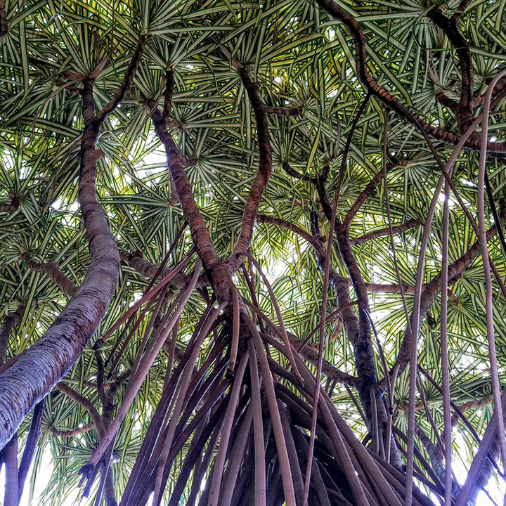

Indigenous vs Endemic
Hala leaves can be used for weaving. Traditionally, mats, beds, canoe sails, and leis were made. However, recently it has been more popular to make hats, fans, baskets, purses, coasters, and cigarette cases. The fruit from the female tree was used for lei and dye brushes. The roots are used for cordage and medicine.
Hala is a tree that can grow from 15-30 feet tall. There is also a distinction between the male tree and the female tree. The male tree has a cream colored flowering spike called the kumuhala hinano. The female tree has fruit that is shaped like a cone that resembles a pineapple which is actually a cluster of seeds called the pu-hala. The hala tree is also a metaphor for the different life stages. For example, old age is represented by a ripe leaf, and large families are like the many roots coming from the hala tree.
Hala is believed to be connected to the origin of man. A young goddess was cutting lauhala strips, when her shell trimmer cut her finger. When it stopped bleeding, two eggs were formed, and they were thought to be the father and mother of the human race.
Hala is also connected to our very own Punahou. There was an old Hawaiian couple living where Punahou campus is, and they would get their water from a nearby stream. However, one day when a drought came, the river dried up, and they didn’t have any water anymore. The old woman walked all the way to Mō’ili’ili spring for water, which made the old woman very tired. That night, she had a dream about a spring of water underneath a hala tree. When she told her husband, he did not believe her, but the next night he had the same dream. They made an offering to the gods, and the old man had a feast with his friend and tried to pull up the hala tree. And there was "ka puna hou," the new spring.